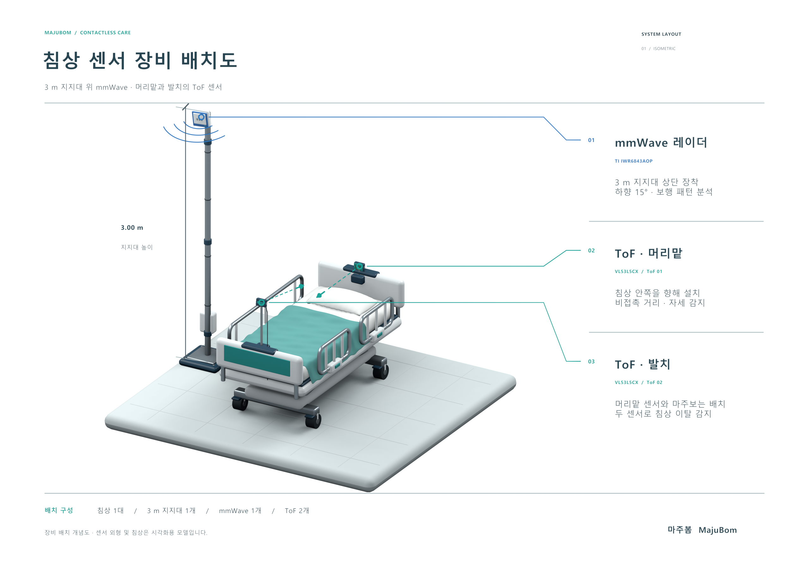

센싱 방식 · 시스템 구성
센서 2개에서 대시보드까지, 한 장의 흐름

병실
치매 병동
1인실
1인실
→


센서 2종
mmWave + ToF
비접촉 감지
비접촉 감지
→

게이트웨이
Pi 5
수신 · 동기화 · 전처리
수신 · 동기화 · 전처리
→

알고리즘
개인 기준선
z-score 판정
z-score 판정
→

대시보드
실시간 확인
알림·기록
알림·기록
영상 저장 없음 · 모든 처리는 병실 안 게이트웨이에서 종료
mmWave 레이더
측정 방식
✓ 감지 항목
전파 송출 → 반사파의 도플러 · 위상 분석
움직임과 미세 진동을 접촉 없이 계산
위치 · 움직임 추적
x,y 좌표 실시간 추적 → 침대 위 위치로 이탈 사전 감지
보행 속도 · 변동성
좌표 변화량 · 걸음 간격(도플러)으로 계산
이탈 가능성 판단 — ToF 보조
mmWave 위치·움직임 + ToF 자세가 겹칠 때 → 이탈 가능성 높음
ToF 거리 센서
측정 방식
✓ 감지 항목
적외선 발사 → 반사 도달 시간(ToF)으로 거리
±1mm 정밀 · 8×8 다존으로 자세 형태까지
자세 형태 인식
8×8 거리 분포로 눕음 → 앉음 → 걸터앉음 판별
침대 가장자리 접근
가장자리 존의 거리 변화로 감지
이탈 가능성 판단 — mmWave 조합
ToF 자세 + mmWave 위치·움직임이 겹칠 때 → 이탈 가능성 높음
게이트웨이 · Raspberry Pi 5
역할
✓ 핵심 기능
센서 2종의 데이터를 병실 안에서 바로 처리
ToF·mmWave 두 스트림을 한 곳에서 받아 알고리즘에 넘길 준비까지 끝냄
병실 안에서 1차 처리 완료
영상도, 원본 데이터도 밖으로 나가지 않음 — 개인정보 안전
두 센서 시간 동기화
ToF·mmWave를 같은 타임라인으로 맞춰 하나의 상황으로 해석
전처리(노이즈 제거)
알고리즘이 바로 쓸 수 있게 값을 정리해 전달
위험도 인식 알고리즘
분류 방식
자세 · 걸음 → 개인 기준선 비교
ToF·mmWave 패턴을 그 어르신의 평소와 대조(z-score)
사람마다 평소가 달라 절대 기준은 오탐이 많음 — 개인 평소 대비 이상치로 판단
✓ 위험도 4단계
정상
z < 1.5
평소 범위
주의
1.5~3.0
경과 관찰
경고
3.0~4.5
확인 권고
위험
z ≥ 4.5
즉시 알림
대시보드
실시간 확인
✓ 핵심 기능
간호사가 보는 화면 — 위치·자세·위험도 한눈에
병실 평면도 위에 실제 좌표를 그대로 띄우는 실측 화면
위험 감지 시 즉시 알림
4단계 판정이 경고 이상으로 바뀌는 순간 화면·폰으로 표시
평면도 위 실시간 위치
mmWave 좌표를 침대 기준 위치로 그대로 표시
센서별 상태·기록 확인
ToF 자세·mmWave 보행 판정과 지난 기록을 한 화면에서 조회
마주봄AI 비접촉 센서융합 낙상 예측